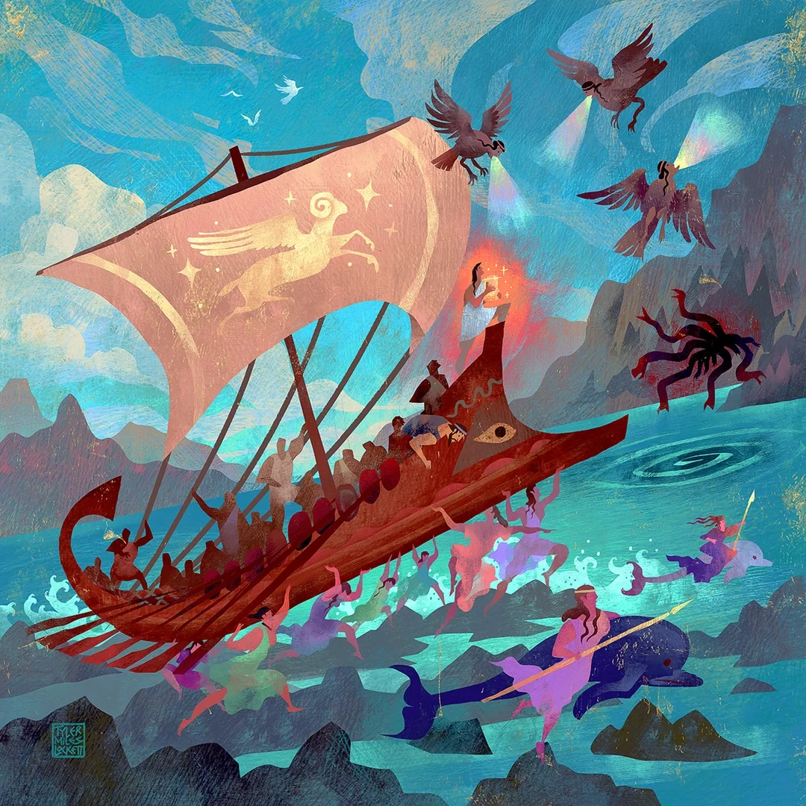

К началу занятия парты стояли несколько непривычно: Кассия раздвинула их к стенам, освободив середину аудитории для небольшого каменного лабиринта. Стенки доходили студентам примерно до колен, так что весь путь от входа до центра можно было рассмотреть сверху. Внутри находился Минотавр, у входа — фигурка Тесея, а между ними тянулась красная нить. Несколько человек уже успели попробовать провести героя по коридорам и теперь спорили, где же свернули неправильно. Кассия позволила им ещё немного повозиться, а потом забрала свободный конец нити и усадила Тесея обратно у входа.
— Добрый день, ласточки мои! Сегодня у нас чудовища. Только прежде чем отправлять Тесея убивать того, кто сидит посередине, давайте разберёмся, кого мы вообще называем чудовищем. Достаточно страшной морды? Или нужно непременно кого-нибудь съесть? И если существо выглядит вполне обычно, но делает такие вещи, от которых волосы дыбом, ему этот титул положен или нет?
Мнения посыпались с разных сторон. Кто-то считал самым важным необычное тело, другие говорили об опасности для человека, а с задней парты предложили не забывать, что люди и без хвостов с когтями умеют творить всякие ужасы. Кассия выслушала ответы, ничего пока не записывая, и кивнула в сторону лабиринта.
— Вот с него и начнём. Мы привыкли говорить «Тесей победил Минотавра», и в этих трёх словах сразу понятно, кому полагается сочувствовать. Тесей — герой, Минотавр — чудовище. Правда, мне интересно, что мы думаем о последнем до того, как появляется Тесей. Вообще откуда он там взялся?
Критом правил Минос, сын Зевса и Европы. В одной из известных версий он попросил Посейдона прислать ему из моря прекрасного быка, чтобы подтвердить своё право на власть, пообещав затем принести животное в жертву. Бык оказался настолько хорош, что Минос решил оставить его себе, а богам, видимо, предложить что-нибудь попроще. Посейдон поступок не оценил и наказал царя весьма неприятным для всей семьи способом: Пасифая, супруга Миноса и дочь солнечного бога Гелиоса, воспылала страстью к тому самому быку. Мастер Дедал изготовил для неё полую деревянную корову, обтянутую шкурой, внутри которой Пасифая смогла приблизиться к животному. Так появился ребёнок с человеческим телом и бычьей головой — Астерион, или Астерий, куда более известный нам под именем Минотавра.
— Прямо скажем, наследственность у мальчика была непростая, а обстоятельства рождения ещё хуже. Но обратите внимание, что сам он никакого быка у Посейдона не выпрашивал и обещаний богам не нарушал. Это история поступка Миноса, наказания, которое пришлось на Пасифаю, и ребёнка, появившегося в результате. Когда мы называем его чудовищем уже при рождении, мы, по сути, судим исключительно по внешности.
Кассия передвинула к краю лабиринта маленькую фигурку Минотавра, а на её месте поставила другую, поменьше. У неё была та же бычья голова, только ростом она едва доставала до края лабиринта. Минос приказал Дедалу построить лабиринт и запереть Астериона внутри. Псевдо-Аполлодор сообщает, что царь поступил так, следуя прорицаниям, однако не объясняет, что именно ему предсказали. Не рассказывает он и о том, нападал ли маленький Минотавр на кого-нибудь до заточения, пытался ли выбраться, понимал ли, что с ним произошло. Кассия остановила фигурку у глухой стены и больше не стала ею двигать.
— Тут очень легко додумать за древних авторов слезливую историю о несчастном ребёнке, от которого отказалась семья. Возможно, вам даже захочется её написать, и я не возражаю. Но в лекции мы должны различать то, что действительно сохранилось в мифе, и то, что придумали уже мы сами. Нам неизвестно, что Астерион чувствовал в лабиринте. Из того, что о нём мало рассказывают, ещё не следует, что он был добрым, злым или вообще понимал своё положение так же, как человек.
Позднее конфликт Крита с Афинами привёл к тому, что афиняне должны были отправлять Миносу семь юношей и семь девушек. Поводом стала гибель его сына Андрогея после поездки в Афины или Аттику, причём разные версии по-разному объясняют, как именно он погиб. Молодых людей отправляли в лабиринт, и у Псевдо-Аполлодора прямо говорится, что они предназначались Минотавру в пищу. Так что превращать взрослого Астериона в совершенно безобидного узника тоже было бы нечестно: за его историей стоят настоящие человеческие жертвы, пусть мы и не знаем, как он сам воспринимал происходившее.
— А дальше появляется Тесей, связанный с афинским царским домом, и хочет покончить с этими отправками. На Крите ему помогает Ариадна, дочь Миноса и Пасифаи, которая, между прочим, приходится Минотавру сестрой. Она даёт герою нить, чтобы тот мог найти обратную дорогу. Давайте-ка теперь попробуем довести нашего Тесея до середины.
Студенты вновь взялись за красную нить, споря уже гораздо меньше. Фигурка Тесея прошла по коридорам и добралась до Минотавра, после чего Кассия убрала обе и оставила на виду только пустой лабиринт. Тесей победил Астериона и вернулся обратно; для афинян это означало избавление от страшной дани. Но для того, кто жил в центре лабиринта, герой оказался человеком, который пришёл его убить. Но по сути, Тесей защищал людей от гибели, а Минотавр действительно был связан с их смертью. Просто одна и та же история выглядит по-разному, если на время перестать смотреть на неё только глазами победителя.
— С другой стороны, не всякий, у кого человеческое тело соединено с животным, считался чем-то злым. Возьмём Хирона: кентавр, половина тела лошадиная, а его вспоминают как учителя героев и искусного целителя. Или Пана, у которого тоже хватает звериных черт, однако почитают его как бога. У нас в Хогвартсе и вовсе никто не удивляется кентаврам в Запретном лесу. Поэтому одним внешним видом определение чудовища явно не исчерпывается.
Следующий пример оказался гораздо ближе к истории Эдипа, о которой студенты слышали на прошлом занятии. Кассия написала на доске «Сфинкс» и рядом — «Фивы». У Псевдо-Аполлодора Сфинкс выглядит устрашающе: женское лицо, львиное тело, птичьи крылья. Гера посылает это существо к Фивам, а жители знают пророчество, что бедствие прекратится, когда кто-нибудь решит загадку. Пока ответ не найден, Сфинкс убивает людей. В конце концов Эдип справляется с загадкой и освобождает город.
— На первый взгляд тут и обсуждать нечего: существо пожирает людей, герой побеждает, все рады. Но представьте, что вы встретили совершенно другой рассказ о том же Сфинксе. У Павсания, например, записан вариант, в котором никакой крылатой напасти нет. Там Сфинкс — предводительница морских разбойников, обосновавшаяся возле Фив, и Эдип побеждает её вместе с отрядом. А в другом изложенном им варианте она приходится дочерью самого Лая, знает тайный оракул царского дома и губит тех, кто не может назвать его содержание. Имя одно, город тот же, Эдип снова оказывается победителем, но причины происходящего уже совсем другие.
— А теперь Медуза. Вот уж кого современная публика готова обсуждать часами, хотя античные авторы вовсе не оставили нам её подробного образа. И здесь очень хорошо видно, как поздний рассказ способен изменить наше отношение к давно знакомому персонажу.
У Гесиода Медуза — одна из трёх Горгон, дочерей морских божеств Форкия и Кето. Её сёстры, Сфено и Эвриала, бессмертны, а она смертна. По Псевдо-Аполлодору, Персей отправляется за её головой не потому, что Горгона разоряла окрестные города и кто-то попросил его спасти жителей. Царь Серифа Полидект хотел избавиться от Персея, мешавшего ему добиваться Данаи, матери героя, и потребовал в качестве дара голову Медузы. Афина и Гермес помогли юноше добраться до Горгон. Он застал их спящими и отсёк Медузе голову, глядя на отражение, чтобы не встретиться с её смертоносным взглядом.
— Заметьте, как устроен этот рассказ. Для Персея это трудное поручение и опасное приключение, а вот про жизнь Медузы до его появления нам сообщают гораздо меньше. Мы знаем, что взгляд Горгон обращал увидевшего их в камень. Но из этого ещё не получается подробная история о Медузе, которая специально охотилась на невинных путников. Когда Персей приходит, она вообще спит. У Псевдо-Аполлодора гораздо больше внимания уделено тому, как герой получил помощь и выполнил задание, чем тому, что Медуза могла думать о собственной смерти. И это не ошибка автора, просто главная фигура его рассказа — Персей.
Есть, однако, и другой хорошо известный вариант. Римский поэт Овидий рассказывает о Медузе как о прежде прекрасной девушке, которой овладел Нептун в храме Минервы. Нептун — римское имя Посейдона, Минерва соответствует Афине. После этого богиня превратила волосы Медузы в змей. У Гесиода мы не встречаем рассказа о превращении девушки после пережитого насилия, а у Овидия это событие становится важной частью её прошлого. Если соединить всё в единую биографию, не оговаривая разницы между источниками, легко получить историю, которой в таком виде не рассказывал ни один из них.
— Мне кажется, было бы довольно странно запрещать кому-то сочувствовать Медузе, особенно после Овидия. Но столь же странно говорить, что любой древний рассказ о ней непременно начинается с её человеческой жизни и наказания. Вот зачем нам в самом начале курса понадобился разговор о разных версиях. Иногда от того, какой текст мы читаем, меняется буквально всё, что мы думаем о персонаже.
После гибели Медузы её голова продолжает обращать людей в камень. Персей использует её против врагов, а затем отдаёт Афине. Изображение головы Горгоны, горгонейон, в греческом мире помещали на щитах, зданиях и других предметах как защитный знак. Получается любопытная вещь: образ существа, встреча с которым смертельно опасна, мог одновременно служить оберегом. Предлагаю не путать страх перед определённым образом с тем, что люди обязательно считали его бесполезным или исключительно злым.
К концу занятия оставались лишь сирены.
— В «Одиссее» волшебница Кирка заранее предупреждает Одиссея об острове сирен. Их песни заманивают моряков, а рядом лежат останки тех, кто не сумел уйти. Но сирены не бросаются с когтями на корабль и не гонятся за людьми по морю. Они поют и обещают знание, причём Одиссею предлагают рассказать о событиях Троянской войны и обо всём, что происходит на земле. Для человека, которому непременно нужно всё разузнать, предложение, согласитесь, весьма соблазнительное. Одиссей хочет услышать песню, поэтому заранее велит спутникам залепить уши воском, а самого себя привязать к мачте. Он отдельно просит не развязывать его, даже если начнёт умолять. Так и происходит: услышав сирен, он требует освободить его, а товарищи вместо этого затягивают верёвки сильнее. Заметьте, Одиссей ведь идёт к опасности сознательно и заранее придумывает, как себя обезопасить. Мы привыкли обсуждать, насколько страшны сирены, а здесь не менее интересно поведение самого героя. Он не просто спасается от того, кто хочет его погубить, — он сам хочет приблизиться и услышать, только без смерти. И всё же забывать про погибших моряков нельзя: песня сирен остаётся смертельно опасной, как бы красиво она ни звучала.

Кассия подошла к лабиринту. Красная нить всё ещё лежала у входа, а в середине теперь никого не было. Девушка начала понемногу разбирать каменные перегородки, пока студенты дописывали последние строки.
— Ну что, изменилось у кого-нибудь представление о чудовищах? Не обязательно отвечать сейчас, у вас как раз есть такой вопрос в домашке. Если захочется поспорить, кто из сегодняшних персонажей заслуживает сочувствия, пожалуйста. На сегодня всё, ласточки мои. До встречи!